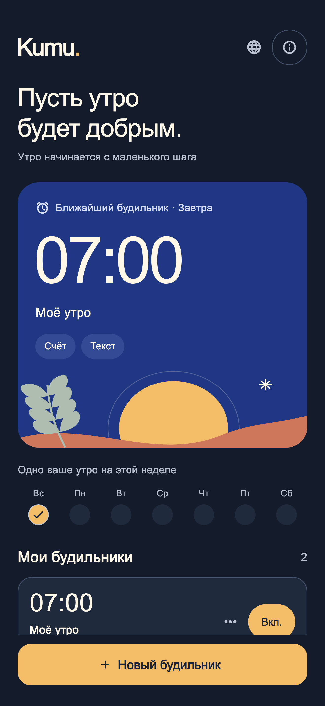
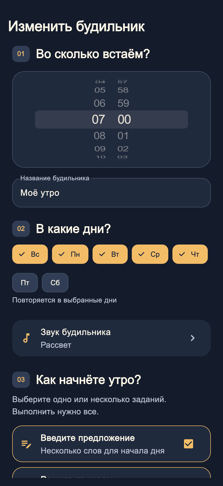
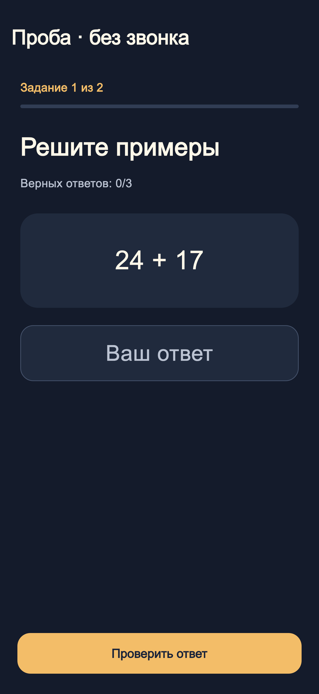

Выберите время
Ваше время, ваши дни и восемь звуков на выбор. Всё в одном месте.
УТРО НАЧИНАЕТСЯ С МАЛЕНЬКОГО ШАГА
Будильник с небольшими заданиями, которые помогут встать. Выберите время, звук и первый шаг нового дня.
Уже в App StoreДля iPhone · iOS 26 или новее

Обновление с русским и арабским языками и выбором языка в приложении уже доступно в App Store. На снимках экрана — демонстрационные данные.
01 / УТРЕННИЙ ПОРЯДОК
Каждое утро особенное. И пробуждение тоже может быть вашим.
Ваше время, ваши дни и восемь звуков на выбор. Всё в одном месте.
Введите своё предложение, решите несколько примеров или попробуйте экспериментальное задание с фото. Выберите одно или несколько.
Выполните задания в приложении, чтобы завершить пробуждение и отменить резервные сигналы.
02 / БЛИЖЕ К ДЕТАЛЯМ
Простые настройки. Понятные задания. Место для вашего утра.


03 / КОНФИДЕНЦИАЛЬНОСТЬ С САМОГО НАЧАЛА
Без аккаунта, рекламы и отслеживания. Фото для задания обрабатывается на iPhone. Оно не сохраняется и не отправляется разработчику.
Политика конфиденциальности ↗Для важных пробуждений используйте независимый запасной будильник. Работа сигналов зависит от устройства и настроек; пробуждение не гарантируется. Безопасное использование
Да. iOS позволяет остановить сигнал системными кнопками. Kumu. планирует резервные сигналы каждую минуту на 30 минут вперёд и продлевает этот период, пока вы выполняете задания. Если приложение закрыто дольше, резервные сигналы могут закончиться.
Сфотографируйте унитаз для распознавания на устройстве. Функция экспериментальная. После трёх неудачных попыток или если камера либо распознавание недоступны можно перейти к пяти запасным примерам.
Kumu. предназначена для iPhone с iOS 26 или новее. Обновление уже доступно в App Store с поддержкой иврита, английского, русского и арабского языков и выбором языка в приложении. Язык по умолчанию — русский, арабский или иврит, если это основной язык телефона, и английский в остальных случаях. Язык также можно выбрать вручную.
Kumu. уже доступна в App Store. Открыть Kumu в App Store ↗
KUMU. / СНОВА ДОБРОЕ УТРО.
Сделайте первый шаг в своё утро. Уже на iPhone.
Ваше утро начинается здесьЗагрузить в App Store